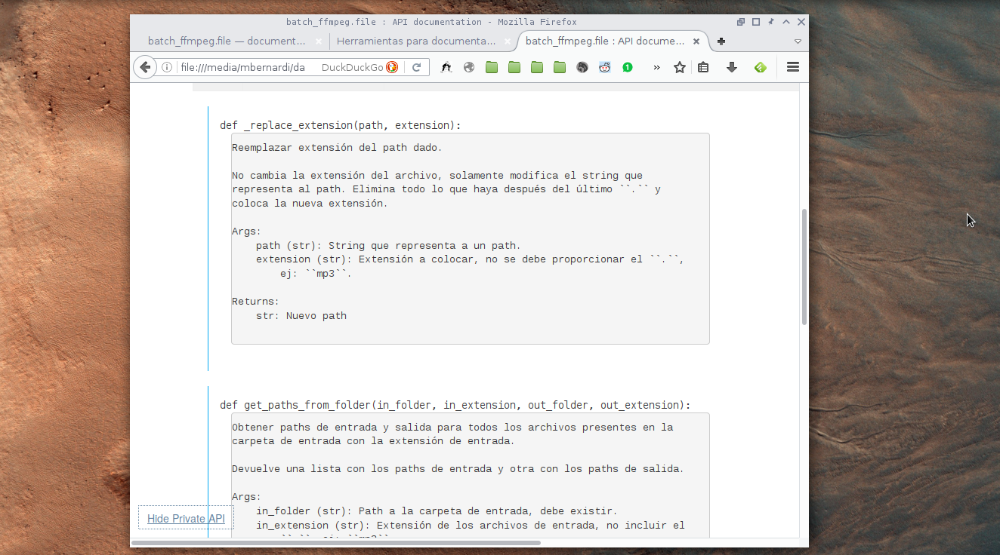

Usar pydoctor¶
Si o si usa Python 2, pero eso no significa que no pueda documentar código escrito en Python 3.
Imagen de ejemplo:
Con estos pasos se generarán archivos html en una carpeta llamada
apidoc, que dentro tiene un index.html que es lo que nos interesa.
cd mi_proyecto
sudo pip install pydoctor
Luego el comando depende de si se quiere documentar un módulo o un paquete:
pydoctor --add-package ./ --docformat plaintext
pydoctor --add-module ./modulo.py --docformat plaintext
Advertencia
Por alguna razón algunos módulos se muestran como undocumented en el
html generado, todavía no sé por qué a pydoctor no le gustan algunos
módulos.
Por hacer
Encontrar por qué. Ver parse.py y convert.py de batch_ffmpeg. En el
ejemplo se puede ver el problema.